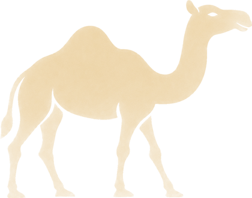
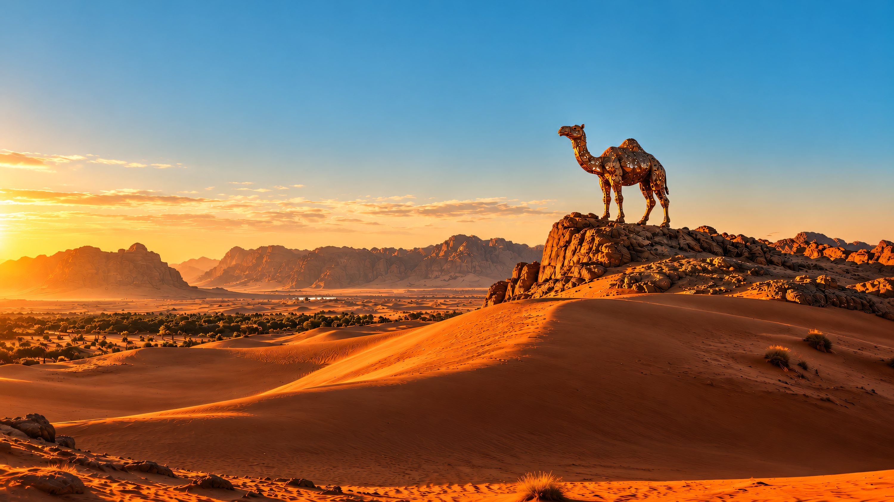
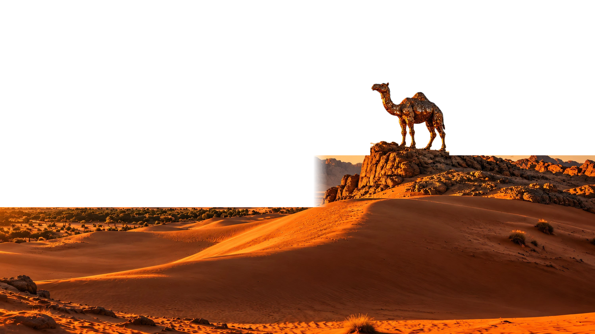
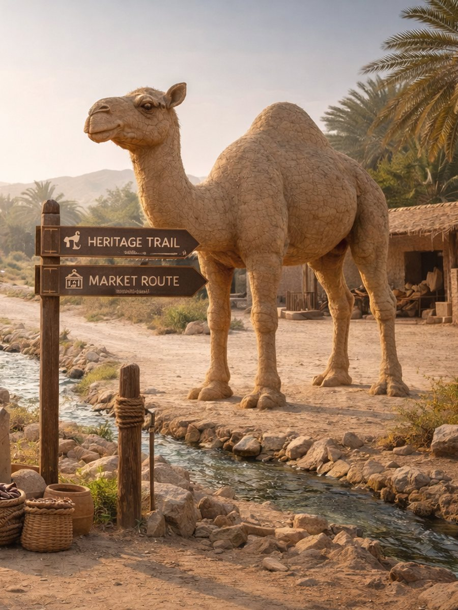
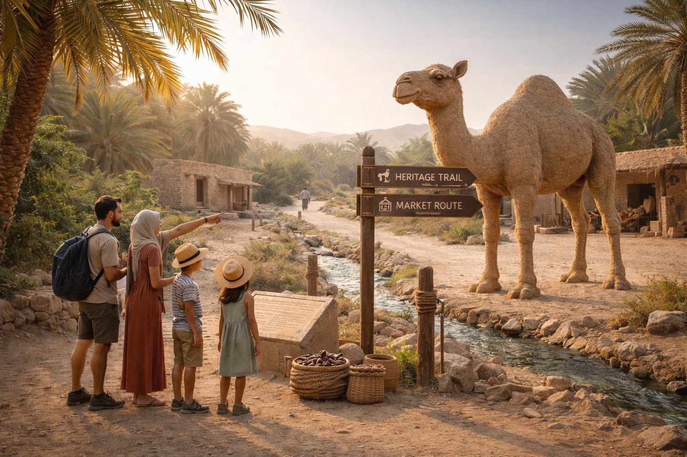

01
Help Wafi find the camels
Wafi was helping his dad look after the camels while his dad went on a journey. In the night, Wafi was fast asleep and did not hear the camels run off.
Now it is up to you to find them before his father comes home.

Caravan Quest

A one-of-a-kind adventure to discover hidden camel sculptures, untold stories and extraordinary places beyond the tourist trail.
Artist's impression
About Caravan Quest

Caravan Quest is in its launch phase. Numbers show the plan, not sculptures already installed.
The Hunt
Wafi was helping his dad look after the camels while his dad went on a journey. In the night, Wafi was fast asleep and did not hear the camels run off.
Now it is up to you to find them before his father comes home.
Physical sculptures you can find on site. Some take a bit more searching.
Built into something else, or an optical illusion that only appears from the right spot. Some can only be seen in AR.
Purely digital. You find them in AR.
Finding a hidden camel scores points. Answer a question about the place correctly and you earn more. Points reward time spent in nature and what you learn about the culture and heritage around you.
Each camel is a large handmade wooden sculpture made from recycled materials. They are meant to be installed with a "Leave No Trace" helical anchoring system, set directly into soil, sand or gravel with no concrete foundation.

The Route
These are the candidate sites from our location plan. Final locations depend on landowner and authority approvals, and none are confirmed yet.
Heritage precincts, oasis walkways and mangrove promenades.
A heritage waterfront in the city, and mountain outdoors beyond it.
Culture first: heritage areas and museum-adjacent public spaces.
Coastline and heritage-linked public spaces with family footfall.
Mangroves, lagoons and coastal nature with guided access.
Mountain viewpoints and cultural zones with outdoor access.
Forts and heritage corridors, a coastal promenade, and wadi trailheads.
Stories
Stories, artist profiles and news will appear here as the project grows. Follow @thecaravanquest for updates.
The caravan is getting ready
Be first to hear when the camels arrive.
Thank you. The caravan will find you soon.